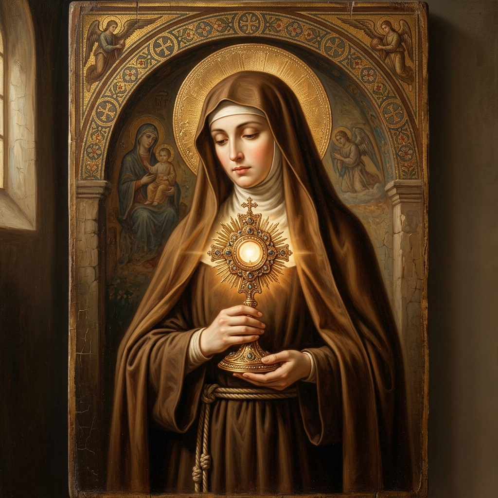

Santa Clara de Asís
La primera mujer en escribir una regla aprobada para la Iglesia, protectora eucarística y seguidora incansable del ideal franciscano.
Juventud, Fuga y Conversión
Nacida como Chiara Offreduccio en Asís (1194) en el seno de una noble y adinerada familia aristocrática, Clara creció rodeada de lujos y oportunidades. Desde pequeña destacó por su piedad y espíritu de oración. Sin embargo, su destino cambió radicalmente al escuchar las predicaciones cuaresmales de Francisco de Asís en la iglesia de San Rufino. El llamado de Francisco a vivir según la pureza del Santo Evangelio y la pobreza radical encendió en Clara un anhelo incontenible de entregarse a Cristo.
En la noche del Domingo de Ramos de 1212, rechazando un matrimonio arreglado por sus padres, Clara huyó en secreto de su casa señorial. Se encontró con Francisco y sus primeros hermanos en la Porciúncula, donde, en una ceremonia solemne ante el altar, Francisco le cortó el cabello y le impuso un tosco hábito de lana cruda, sellando así su consagración a la pobreza evangélica. Tras refugiarse temporalmente en monasterios benedictinos, finalmente se trasladó a la iglesia de **San Damián**.
Las Damas Pobres de San Damián
En San Damián, Clara fundó la **Segunda Orden Franciscana** (hoy conocidas como Clarisas). Pronto se unieron a ella numerosas jóvenes, incluyendo a su hermana Inés y, más tarde, a su propia madre. La comunidad vivía de la contemplación, el trabajo manual y la mendicidad, rehusando poseer bienes comunes o rentas estables.
Esta renuncia absoluta a la propiedad privada fue fuente de tensiones con los pontífices de la época, quienes, preocupados por la seguridad de un monasterio femenino sin sustento garantizado, intentaron en repetidas ocasiones dotar a San Damián de posesiones territoriales. Clara defendió heroicamente lo que llamó el **"Privilegio de la Pobreza"**, logrando que el Papa Gregorio IX y posteriormente Inocencio IV aprobaran su Regla de vida, la primera regla religiosa redactada formalmente por una mujer en la historia, apenas dos días antes de su fallecimiento en 1253.
El Milagro del Santísimo Sacramento
Uno de los episodios más célebres de su vida ocurrió en 1240, cuando tropas de mercenarios sarracenos al servicio del emperador sitiaron Asís e invadieron el claustro de San Damián. Estando gravemente enferma, Clara se hizo trasladar a las puertas del monasterio sosteniendo en alto una pequeña custodia dorada que contenía el Santísimo Sacramento. Frente a la hostia consagrada, Clara oró fervientemente pidiendo la defensa de sus hermanas y de la ciudad. Una misteriosa fuerza y temor sobrecogieron a los atacantes, quienes huyeron despavoridos sin causar daño alguno a la comunidad.

| Nacimiento | 16 de julio de 1194, Asís, Italia |
| Fallecimiento | 11 de agosto de 1253, Asís, Italia (59 años) |
| Festividad | 11 de agosto |
| Canonización | 1255 por el Papa Alejandro IV |
| Patronazgos | Televisión, telecomunicaciones, clarisas |
La Bendición de Santa Clara
"El Señor os bendiga y os guarde.
Os muestre su rostro y tenga misericordia de vosotras.
Vuelva su mirada hacia vosotras y os dé la paz.
El Señor esté siempre con vosotras, y ojalá que vosotras estéis siempre con Él. Amén."